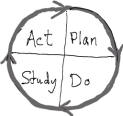
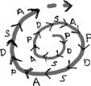
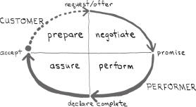
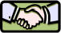

i050601
TROST
InfoNote
Symbols of Trust
[version 0.12]
|
|
i050601
TROST
InfoNote |
- Latest version: The latest version of this InfoNote is available on the Internet at
<http://TROSTing.org/info/2005/06/i050601b.htm>.- This version: 0.12 <http://TROSTing.org/info/2005/06/i050601c.htm>. Consult that page for the latest status and for the most-recent electronic copies of the material.
I wanted a symbol that signifies authentic trust relationships between the producers and adopters of open-system components (Solomon & Flores 2001). The symbol I've chosen is intended to emphasize recognition of trustworthiness in software. I will use it as the logotype for TROSTing.org. It will also be used to signify TROSTing in diagrams and in other presentations. The symbol is also designed to suggest important process models used in development of information-technology systems and remind us of the degree that trust relationships matter in those undertakings. The following sections provide motivation for situation of trust in this way.
1. Engagement: The Cycle of Learning and Improvement
2. Managing Commitment: The Conversation for Action
3. Symbolizing Trustworthiness: Cooperation and Partnership
4. Other Symbols
References and Resources
1.1 Closing the Loop of Development. One symbol used to

characterize development and delivery of products is the Shewhart-Deming cycle of learning and improvement, known as PDSA for Plan-Do-Study-Act (Latzko & Saunders 1995, p.5). The cycle is sometimes labeled Plan-Do-Check-Act (PMI 2004, Fig. 3-1). It was introduced by Deming in this form as early as 1950 (Deming 1994, p.131). An important contribution of the Shewhart-Deming view is abandonment of the idea that introduction of a product happens in a free-standing, detached sequence of independent stages, with each development beginning from scratch. The cyclic model provides explicit recognition of the opportunity for learning and improvement from cycle to cycle that occurs by design as part of achieving excellence in operations, quality products, and satisfied customers.1.2 Cycles of Learning. The cycle encompasses a variety of delivery-oriented processes, whether for production of manufactured goods or development of research results or the design and improvement of a process. Deming sees each stage as having the next stage as its customer, with the final stage delivering the product or service to the ultimate customer. Every stage cooperates with the preceding and the succeeding stage. The stages work "together toward quality that the ultimate customer will boast about." (1986, p.87).
Stage
Shewhart (1939) Deming (1986) Deming (1994)
Microsoft (2002)
1. Plan Specification Design it Plan a change or a test,
aimed at improvementEnvision and Plan 2. Do Production Make it Carry out change or test,
preferably small scaleDevelop 3. Study/
CheckInspection Put in the market What is learned?
What went wrong?Stabilize 4. Act - Test it in service Adopt or abandon or
cycle through againDeploy 5. Plan ... - (Re-) Design with new knowledge ... ... ... 1.3 Helix of Continual Improvement. Deming anticipated what he

called a "helix of continual improvement of satisfaction of the consumer, at a lower and lower cost." He was clear that the cycle was a feedback process between the producer and the market: "Communication between the manufacturer and the user and the potential user gives the public a voice in the design of product and in the delivery of service. It gives him product and service better suited to his needs, at less cost. Democracy in industry, one might say" (1986, p.181). This model fits closely with the idea of spiral development of computer systems (Boehm 1988).Deming also recognized and emphasized that the consumer is the most-important part of the assembly line and that the enterprise's customers and suppliers are part of the same system. It was this orientation that he conveyed to Japanese executive management in the 1950s (Latzko & Saunders 1995, p.4).
1.4 Trust Engagement. Although the cycle of learning is presented from the perspective of producers, there are important relationships between customers, producers, suppliers and other stakeholders at every stage of the cycle. The PDSA spiral serves as a reminder that the full lifecycle of development and adoption for complex products requires elaborate cooperative relationships that build trust: "The more complex the supply chain, the more interdependencies it creates and the more parties have to collaborate rather than negotiate" (Keen 1999, p.9). Although the participants in development and adoption of computer systems and software components often have no direct acquaintance, there exists a diffuse relationship despite personal anonymity. To account for that I use the term "engagement" rather than "relationship," signifying participation that is loosely-coupled and indirect with building of trust just the same.
1.5 Scale. The PDSA cycle is also a "fractal" pattern in the sense that there may be many development cycles at lower levels of detail in any given undertaking; the structure under scrutiny can be one instance under a cycle that is occurring at a higher level, even to the level of enterprise or economy. In addition, there are many spirals underway at the same time, with distinct and overlapping "life cycles" involving an ever-changing mesh of undertakings. Although the symbol becomes less indicative of this complex, unmediated dance, major undertakings can be seen to exhibit the pattern: joint military operations, transportation systems, national or regional campaigns and elections, agricultural production and distribution, man-in-space programs, and the relief effort triggered by the December, 2004, tsunami come to mind. The common feature is multiple layers of cooperative activity with varying degrees of coordinated action and enterprise.
2.1 Completing the Loop in Action Language. A cycle with stages similar to the Shewhart-Deming cycle of learning occurs in the management of

commitments through action language (Winograd & Flores 1987, section 5.4; Flores 1997). This is typically at the level of individuals in a working relationship. The two immediate actors are the customer for the particular action and the performer of the action. One cycle consists of determining a required action, negotiating it, performing it, and assuring the conditions of satisfaction. The stylized conversation for action involves a customer request (or offer by the performer), the performer's promise, the performer's declaration of completion, and the customer's acceptance and confirmation of completion. There are many other ways that the conversation can proceed, always with completion and not always with achievement of the result (Winograd & Flores 1987, fig. 5.1). Similar exceptions can arise of course in the PDSA cycle of learning and improvement.2.2 Depicting Workflows. The loops used to illustrate these action-language performances can be connected into workflows of coordinated conversations (Medina-Mora et.al. 1992; Denning & Medina-Mora 1995; Flores 1997). This model is offered by Denning as a powerful way to manage commitments rather than time (2002). A critical feature for use in workflow diagrams is the identification of the two parties. A network of commitments and engagement arises when other conversations for action are linked to the given one and to others triggered from this one as part of the interdependence of activities.
2.3 Trust and Partnership. The use of stylized language has led some to consider the conversation for action as autocratic and controlled by the customer, typically seen as a manager or supervisor (De Michelis & Grasso 1994). That is not the case for conversations conducted inside of a relationship of authentic, mutual trust (Solomon & Flores 2001): partnership, collaboration, and reciprocity are better terms when there is a trust relationship involved. The focus of the e-mail mini-course in Let's Play Catch! is almost entirely on empowering the performer to make reliable promises and the customer to secure them via the conversation for action (Macomber 2005).
2.4 Adaptation of the Symbol. The form of the loop diagram here is similar to Flores (1997). Variations can be found in use on the Internet (Agile 2005; VISION 2005). The basic modification, above, is dotting the arrow from initiation (the large "dot") through preparation, signifying possible arrival from some other completed loop into a new iteration. This same adjustment is also useful for the Shewhart-Deming cycle where the Act stage of another PDSA spiral may lead into the envisioning and planning stage of a subsequent development cycle (section 1.1). In order to not have such a busy symbol, I chose an alternative in the composite that I will try out (section 3).
2.5 Scale and Application. Although the conversation for action generally applies between identified parties (or rôles), it blends with the Shewhart-Deming cycle in two ways.
- The first way is as underpinning of the product development activity itself, where each stage is conducted with numerous action-language engagements. It is a component of building trust among the product- and system-development stakeholders. Where the PDSA is a chain of molecules, the conversations for action are the atoms and their particles.
- The second way is perhaps more important. The conversations for action that occur in an activity can be identified and supported in the architecture and design of the supporting information-technology systems. There it supports confirmation of the work practices of system adopters and users and the purposes and commitments of their mutual enterprise. Identifying conversations in the adopter's world helps portray and confirm the problem space that a software artifact is proposed to serve as an instrument.
2.6 Action in the System View. Examination of the interactions and commitments of those who engage with a system brings attention to the system-lifecycle in the problem space where the adopters operate. This view moves outside the lifecycle of the software artifacts, paying attention to how the software can blend into a long-lived, dynamic solution setting. Such attention is notoriously missing in software development. Addressing the system view is often confused with providing user-interface design and system-facing use cases. Without a problem-space system view, it is easy to overlook interactions in the world that matter most in having the system be suitable to the purposeful work of the users. "The standard engineering design process produces a fundamental blindness to the domains of action in which the customers of software systems live and work" (Denning & Dargan 1996). The power of embracing the adopter's world and finding out what the work involves and what its purpose is can lead to powerful collaborative designs, demonstrated in the case study recounted by Denning and Medina-Mora (1995). This is an example of "design as identifying and taking care of concerns" also illustrated by Denning and Dargan (1994): "Software systems have customers. Quality means customer satisfaction. Customers are more likely to be satisfied by software that is transparent in their domain of work because it allows them to perform familiar actions without distraction and allows them to perform new actions that previously they could only speculate about."
2.7 Importance for Trustworthiness. The identification of interactions and workflows under which an information system is applied is an important demonstration that the product design is considerate of the world of the ultimate customers. This caring for the customer is evidence for trustworthiness to the degree apparent in the product by design.
Neither the cycle of learning and improvement (section 1) nor the conversation for action (section 2) give explicit indication of the essential rôle of trust. Trust clearly can and will be present. It is important to reflect that directly in the symbol.
3.1 Handshake. In searching for images that symbolize trust, I found great power in the photographic image of a handshake

(3pod 2005). Handshakes symbolize agreement, commitment, partnership, cooperation, and a willingness to trust. An attractive handshake graphic was obtained from the Microsoft Office Online clip gallery. Microsoft Office Visio® Professional 2003 (SP1) was used to simplify the handshake and convert the hand-drawn loops into geometric line art.3.2 Composite Symbol. It seems appropriate to place the handshake at the heart of a spiral that signifies
Used in conjunction with TROSTing.org and the TROST project, this symbol emphasizes that open-system trustworthiness is fundamentally born out of the trust relationship of those engaged with the software. It reflects the care for adopters and users reflected in the delivered artifacts by design.
There are a few other symbols that have an application to special cases in TROSTing of an open-system component.
4.1 TROST Assessment. It is valuable to have an icon or button shape that can be used to indicate availability of appraisals and attestations concerning a software component, its status and its support. The details are meant to be available for the analysis of adopters in determining the known condition of a software component. My inclination is for thumbs-up and thumbs-down symbols on a yin-and-yang background.
4.2 Trust Points. By their nature, open-system components are designed to rely on a wide variety of resources and interfaces as part of integrating their function into applications. The developers of a component rely on the correct functioning and safe ways of failing of those other components on which they rely, including the prospect of change and replacement of external components. Presuming correct functioning of external components and their interfaces is a necessary "divide and conquer" principle by which the correct functioning of one component is contingent on the correct functioning and agreed interfaces to other components. These dependencies constitute trust points, places where the developer is depending on trustworthiness of the suppliers of other components. A symbol for explicit identification of such dependencies in design diagrams, software code, and documentation may be warranted. The only requirement is that the symbol be small, simple, and distinctive.
4.3 Trust Surface. The importance of identifying trust points is with an eye to understanding the degree of vulnerability to defects, failures, and third-party support availability. It is desirable to minimize the "trust surface," isolating the dependencies and minimizing the exposure through them, or at least being clear that the dependencies are identified and understood (a likely driver toward reducing them as well). This is with an eye to determining that the level of dependency is warranted and that any change of circumstances will be vigilantly recognized. I don't know that there is a symbolic representation required. It should be given consideration in creating a trust-point symbol. (The notion of "trust surface" is akin to that of "threat surface" with regard to assurance of software security.)

|
created 2005-06-23-23:18 -0700 (pdt) by
orcmid |